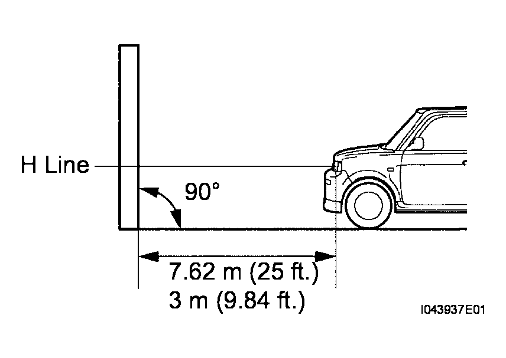

Headlight Assembly: Adjustment
- VEHICLE PREPARATION FOR HEADLIGHT AIM ADJUSTMENT
- Prepare the vehicle:
- Ensure there is no damage or deformation to the body around the headlights.
- Fill the fuel tank.
- Make sure that the oil is filled to the specified level.
- Make sure that the coolant is filled to the specified level.
- Inflate the tires to the appropriate pressure.
- Place the spare tire, tools, and jack in their original position.
- Unload the trunk.
- Sit a person of average weight (68 kg, 150 lb.) in the driver's seat.
- Prepare the vehicle:
- PREPARATION FOR HEADLIGHT AIMING (Using a tester)
- Prepare the vehicle for headlight aim check.
- Adjust in accordance with headlight tester instructions.
- PREPARATION FOR HEADLIGHT AIMING (Using a screen)
- Prepare the vehicle according to the following conditions:
- Place the vehicle in a location that is dark enough to clearly observe the cutoff line. The cutoff line is a distinct line, below which light from the headlights can be observed and above which it cannot.
- Place the vehicle at a 90° angle to the wall.
- Create a 7.62 m (25 ft.) distance between the vehicle and the wall.
- Place the vehicle on a level surface.
- Bounce the vehicle up and down to settle the suspension.

Courtesy of © TOYOTA, LICENSE AGREEMENT TMS1002NOTE: A distance of 7.62 m (25 ft.) between the vehicle and the wall is necessary for proper aim adjustment. If unavailable, secure a distance of exactly 3 m (9.84 ft.) for check and adjustment. (The target zone will change with the distance so follow the instructions in the illustration.)
- Prepare a piece of thick white paper (approximately 2 m (6.6 ft.) (height) X 4 m (13.1 ft.) (width)) to use as a screen.
- Draw a vertical line down the center of screen (V line).
- Set the screen as shown in the illustration.
HINT:
- Stand the screen perpendicular to the ground.
- Align the V line on the screen with the center of the vehicle.
- Draw base lines (H line, V LH, V RH lines) on the screen as shown in the illustration.
HINT:
- Follow the same procedures for "high-beam inspection".
- Mark the headlight bulb center marks on the screen. If the center mark cannot be observed on the headlight, use the center of the headlight bulb or the manufacturer's name marked on the headlight as the center mark.
- H Line (Headlight height): Draw a horizontal line across the screen so that it passes through the center marks. The H line should be at the same height as the headlight bulb center marks of the low-beam headlights.
- V LH Line, V RH Line (Center mark position of left-hand (LH) and right-hand (RH) headlights): Draw two vertical lines so that they intersect the H line at each center mark (aligned with the center of the low-beam headlight bulbs).
- Prepare the vehicle according to the following conditions:
- INSPECT HEADLIGHT AIMING
- Cover the headlight on the opposite side or disconnect its connector to prevent light from the headlight not being inspected from affecting headlight aiming inspection.NOTE: Do not keep the headlight covered for more than 3 minutes. The headlight lens is made of synthetic resin, and may easily melt or be damaged due to heat.
HINT:
When checking the aim of the high-beam, cover the low-beam or disconnect the connector.
- Start the engine.NOTE: Engine rpm must be 1,500 or more.
- Turn on the headlight and make sure that the cutoff line falls within the specified area, as shown in the illustration.
HINT:
- Since the low-beam light and the high-beam light are a unit, if the aim on one is correct, the other should also be correct. However, check both beams just to make sure.
- Alignment distance is 7.62 m (25 ft.): The cutoff line is 101 mm (3.97 in.) above and below the H line as well as left and right of the V line with low-beam.
- Alignment distance is 3 m (9.84 ft.): The cutoff line is 40 mm (1.57 in.) above and below the H line as well as left and right of the V line with low-beam.
- Alignment distance is 7.62 m (25 ft.): The cutoff line is 101 mm (3.97 in.) above and below the H line as well as left and right of the V line with high-beam.
- Alignment distance is 3 m (9.84 ft.): The cutoff line is 40 mm (1.57 in.) above and below the H line as well as left and right of the V line with high-beam.
- Alignment distance is 7.62 m (25 ft.): The cutoff line is 53 mm (2.08 in.) below the H line with low-beam.
- Alignment distance is 3 m (9.84 ft.): The cutoff line is 21 mm (0.82 in.) below the H line with low-beam.
- Cover the headlight on the opposite side or disconnect its connector to prevent light from the headlight not being inspected from affecting headlight aiming inspection.
- ADJUST HEADLIGHT AIMING
- Adjust the aim vertically:
Adjust the headlight aim into the specified range by turning aiming screw with a screwdriver.
NOTE: The final turn of the aiming screw should be made in the clockwise direction. If the screw is tightened excessively, loosen it and then retighten it, so that the final turn of the screw is in the clockwise direction.HINT:
- Perform low-beam aim adjustment.
- The headlight aim moves up when turning the aiming screw clockwise, and moves down when turning the aiming screw counterclockwise.
- Adjust the aim vertically: